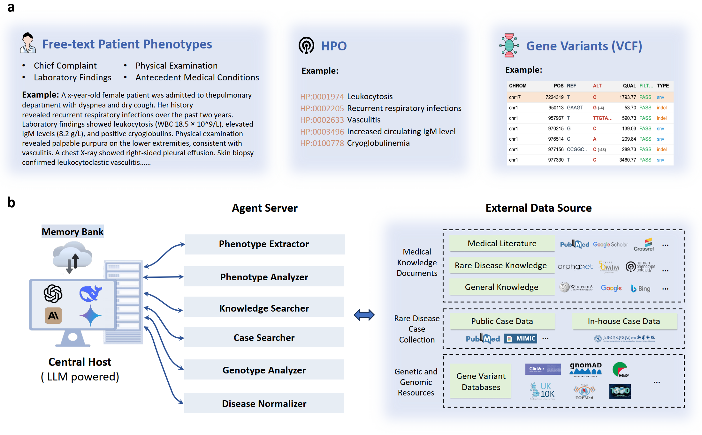
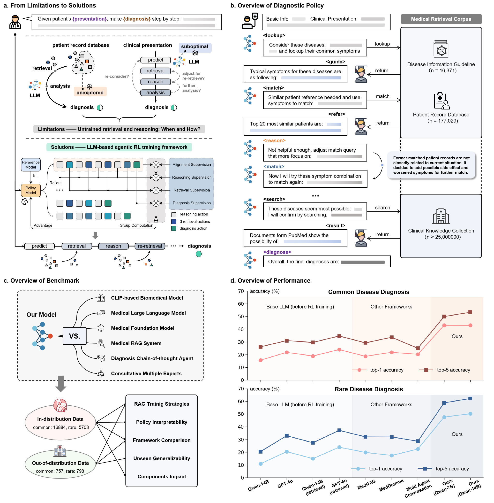
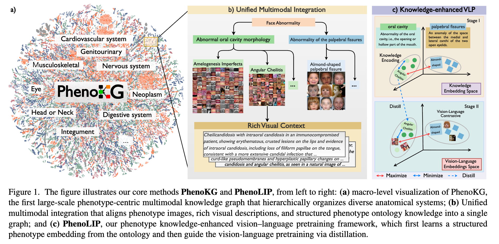
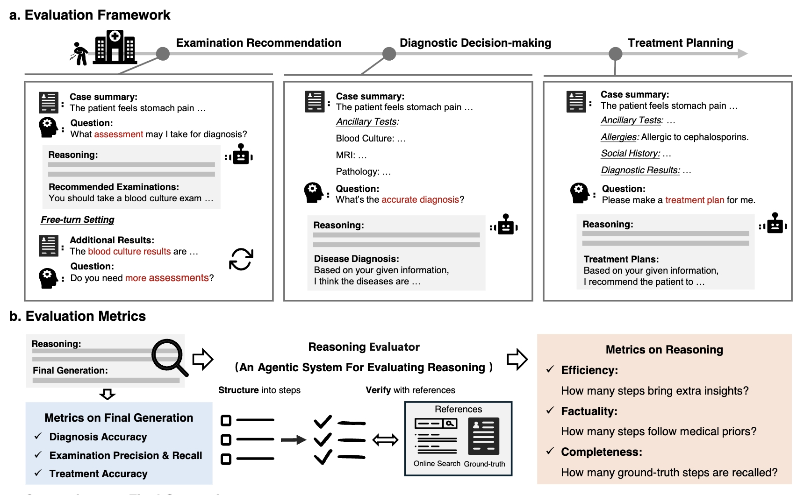
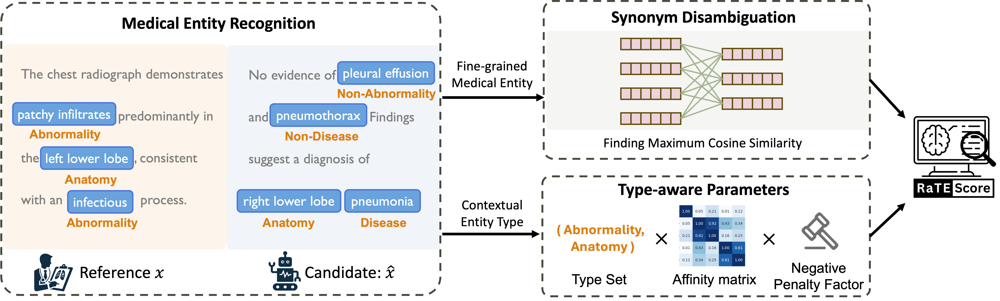
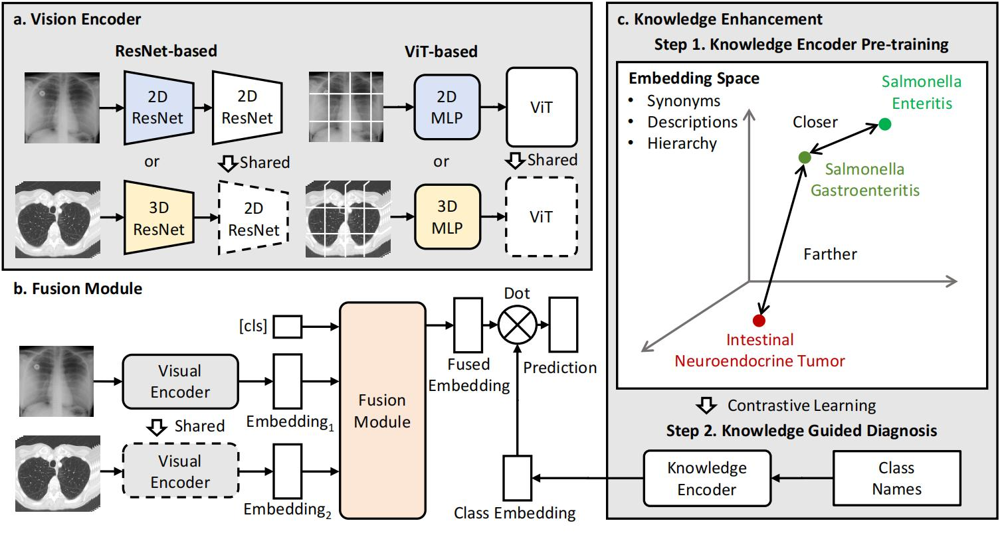
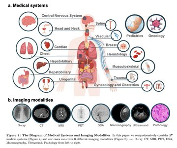

I'm a PhD candidate at Shanghai Jiao Tong University (SJTU), advised by Prof. Weidi Xie and Prof. Ya Zhang.
My research focuses on Artificial Intelligence for Medicine (AI4Med), with a primary interest in developing AI diagnostic systems. I explore the use of large language models and agentic frameworks to create more reliable and interpretable clinical tools, with broader applications in multimodal and multi-omics analysis across medical domains.

We introduce DeepRare, the first rare disease diagnosis agentic system powered by a large language model (LLM), capable of processing heterogeneous clinical inputs.

Deep-DxSearch is an end-to-end agentic RAG system trained with reinforcement learning for traceable diagnostic reasoning. Built on a large-scale medical retrieval corpus with tailored rewards, it consistently outperforms prompt-engineering and training-free RAG approaches — achieving substantial gains over GPT-4o, DeepSeek-R1, and other medical frameworks on both common and rare disease diagnosis.

PhenoLIP is a medical vision-language model that integrates structured phenotype knowledge to improve medical image analysis, leveraging PhenoKG — a new large-scale knowledge graph of 520K+ image–text pairs linked to 3,000+ phenotypes. On the PhenoBench benchmark, PhenoLIP significantly outperforms existing models.

We quantitatively evaluate the free-text reasoning abilities of state-of-the-art LLMs, such as DeepSeek-R1 and OpenAI o3-mini, on assessment recommendation, diagnostic decision, and treatment planning.

RaTEScore is an entity-aware metric for assessing AI-generated medical reports. It emphasizes crucial medical entities such as diagnostic outcomes and anatomical details, is robust to complex medical synonyms, and is sensitive to negation — aligning more closely with human preference than existing metrics.

We build an academically accessible, large-scale diagnostic dataset covering 5,568 disorders linked to 930 unique ICD-10-CM codes — 39,026 cases and 192,675 scans — and present a novel architecture that processes an arbitrary number of input scans across imaging modalities, establishing a new benchmark for multi-modal, multi-anatomy long-tailed diagnosis.

We evaluate GPT-4V for multimodal medical diagnosis through case studies covering 17 human body systems across 8 clinical imaging modalities. As the cases show, GPT-4V remains far from clinical usage.
When I'm not training models, you'll probably find me here: